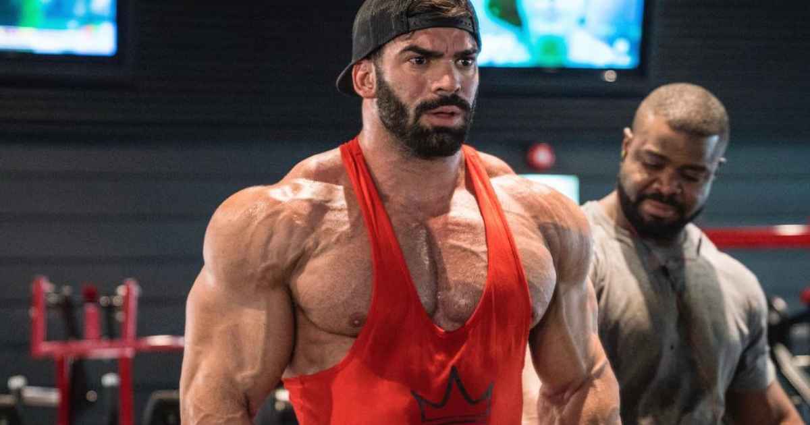
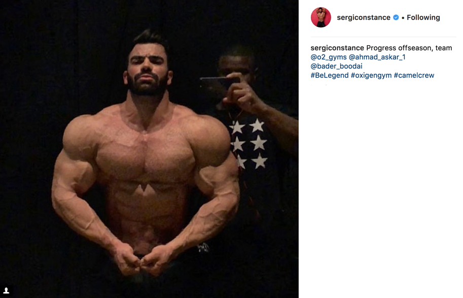

Sergi Constance zeigt erste Ergebnisse aus Kuwait
Sergi Constance ist vielen wahrscheinlich seit längerem ein Begriff. Neben zahlreichen Top-Platzierungen bei Internationalen Profiwettkämpfen ist der gebürtige Spanier auch eines der erfolgreichsten Fitnessmodels. Sergi ist auf allen bekannten Social Media Kanälen zu finden. Auf Instagram folgen Sergi bereits über 3 Millionen Menschen. Dies macht ihn damit auch gleichzeitig zu einem der einflussreichsten Fitness-Influencer dieser Zeit.
Der Spanier startete zuletzt ausschließlich in der Men’s Physique Klasse. Seine körperlichen Voraussetzung insbesondere sein Knochenbau zeigen allerdings das der Athlet wohl besser in einer Bodybuilding-Klasse aufgehoben ist. Für die kommende Saison wechselt das Fitnessmodel in die nächst Höhere Division der Classic Physique. Um hier neben etablierten Athleten mithalten zu können muss der Spanier seine Physique auf das nächste Level bringen. Um dies zu erreichen hat er sich der bereits legendären CamlCrew des Oxygen Gyms in Kuwait angeschlossen. Wer die CamlCrew bereits von Namen wie “Big Ramy” kennt, weiss, dass den dort trainierenden Athleten vor allem das “Anabolic Chicken” äußerst gut bekommt.
Kürzlich veröffentlichte sergiconstance ein erstes Bild seines Fortschritts der aktuellen Offseason. Wir dürfen gespannt sein wie sich der Athlet in den kommenden Monaten entwickelt.
Was haltet ihr von Sergi Constance? Ist es der richtige Weg für ihn in die Classic Physique zu wechseln?
07.12.2017 · Bodybuilding · Athleten · Oxygen GymQuelle: @sergiconstance Instagram